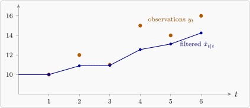

17.2 The Kalman filter
Write \(\hat {\mathbf {x}}_{t\mid s}\) for the conditional expectation of \(\mathbf {x}_t\) given the observations up to time \(s\), and \(P_{t\mid s}\) for its error covariance. The Kalman filter computes these recursively as each observation arrives. We derive it for the scalar local level model, where the algebra is transparent, and then state the general form.
Theorem 17.2.1 (Kalman filter for the local level model). For \(x_t = x_{t-1} + w_t\), \(y_t = x_t + v_t\), with \(\Var (w_t) = Q\), \(\Var (v_t) = R\) and all variables normal, the filter alternates two steps.
- Predict: \(\hat x_{t\mid t-1} = \hat x_{t-1\mid t-1}\) and \(P_{t\mid t-1} = P_{t-1\mid t-1} + Q\).
- Update: with the innovation \(e_t = y_t - \hat x_{t\mid t-1}\) and the gain \(K_t = P_{t\mid t-1}/(P_{t\mid t-1} + R)\), \[ \hat x_{t\mid t} = \hat x_{t\mid t-1} + K_te_t , \qquad P_{t\mid t} = (1 - K_t)P_{t\mid t-1} . \]
Proof. Predict. Given the data to time \(t - 1\), \(x_{t-1}\) has mean \(\hat x_{t-1\mid t-1}\) and variance \(P_{t-1\mid t-1}\), and \(w_t\) is independent of all of it with mean \(0\), so \(x_t = x_{t-1} + w_t\) has mean \(\hat x_{t-1\mid t-1}\) and variance \(P_{t-1\mid t-1} + Q\).
Update. Given the data to time \(t - 1\), the pair \((x_t, y_t)\) is bivariate normal: \(x_t\) has mean \(\hat x_{t\mid t-1}\) and variance \(P = P_{t\mid t-1}\), and \(y_t = x_t + v_t\) has the same mean, variance \(P + R\), and \(\Cov (x_t, y_t) = P\). For a bivariate normal pair, the conditional distribution of one variable given the other has \begin {align*} E(x_t \mid y_t) &= E(x_t) + \frac {\Cov (x_t, y_t)}{\Var (y_t)}\bigl (y_t - E(y_t)\bigr ) , \\ \Var (x_t \mid y_t) &= \Var (x_t) - \frac {\Cov (x_t, y_t)^2}{\Var (y_t)} . \end {align*}
Substituting gives \(\hat x_{t\mid t} = \hat x_{t\mid t-1} + \frac {P}{P+R}e_t\) and \(P_{t\mid t} = P - \frac {P^2}{P+R} = \bigl (1 - \frac {P}{P+R}\bigr )P\). □
The same argument with vectors and matrices, using the multivariate normal conditional distribution, gives the general filter.
Result 17.2.2 (The Kalman filter). Predict: \[ \hat {\mathbf {x}}_{t\mid t-1} = F\,\hat {\mathbf {x}}_{t-1\mid t-1} , \qquad P_{t\mid t-1} = F\,P_{t-1\mid t-1}F^\top + Q . \] Update: with the innovation \(\mathbf {e}_t = \mathbf {y}_t - H\hat {\mathbf {x}}_{t\mid t-1}\) and the Kalman gain \[ K_t = P_{t\mid t-1}H^\top \bigl (HP_{t\mid t-1}H^\top + R\bigr )^{-1} , \] \[ \hat {\mathbf {x}}_{t\mid t} = \hat {\mathbf {x}}_{t\mid t-1} + K_t\mathbf {e}_t , \qquad P_{t\mid t} = (I - K_tH)P_{t\mid t-1} . \]
Remark. Read the update as a weighted compromise. The innovation \(\mathbf {e}_t\) is the part of the new observation the model did not anticipate, and the gain \(K_t\) decides how much of it to believe. If the observation noise \(R\) is large the gain is small and the filter trusts its own prediction; if the state noise \(Q\) is large the prediction is uncertain, the gain is near one, and the filter follows the data. Everything the filter does is that trade, applied recursively.
The recursion is what makes it usable. Each step needs only the previous estimate and the current observation, not the whole history, so the cost per observation is constant and the filter runs in real time. That is why it is used in navigation and tracking as much as in statistics.
Note. The filter is optimal in two distinct senses that are worth keeping apart. If the noise is Gaussian, \(\hat {\mathbf {x}}_{t\mid t}\) is the conditional expectation and therefore the best estimator of any kind (Theorem 14.4.1). Without normality it is still the best linear estimator, the same distinction as between conditional expectation and linear regression.
Example 17.2.3. For the local level model with \(Q = 1\) and \(R = 4\), starting from \(\hat x_{0\mid 0} = 10\) and \(P_{0\mid 0} = 4\), filter the observations \(10, 12, 11, 15, 14, 16\).
Solution. At \(t = 1\): predict \(\hat x_{1\mid 0} = 10\), \(P_{1\mid 0} = 4 + 1 = 5\); the gain is \(K_1 = 5/(5 + 4) = 0.556\); the innovation is \(10 - 10 = 0\), so \(\hat x_{1\mid 1} = 10\) and \(P_{1\mid 1} = (1 - 0.556)(5) = 2.222\). At \(t = 2\): \(P_{2\mid 1} = 3.222\), \(K_2 = 3.222/7.222 = 0.446\), \(e_2 = 12 - 10 = 2\), so \(\hat x_{2\mid 2} = 10 + 0.446(2) = 10.89\). Continuing:
| \(t\) | \(y_t\) | \(\hat x_{t\mid t-1}\) | \(P_{t\mid t-1}\) | \(K_t\) | \(e_t\) | \(\hat x_{t\mid t}\) |
| 1 | 10 | 10.000 | 5.000 | 0.556 | 0.000 | 10.000 |
| 2 | 12 | 10.000 | 3.222 | 0.446 | 2.000 | 10.892 |
| 3 | 11 | 10.892 | 2.785 | 0.410 | 0.108 | 10.937 |
| 4 | 15 | 10.937 | 2.642 | 0.398 | 4.063 | 12.553 |
| 5 | 14 | 12.553 | 2.591 | 0.393 | 1.447 | 13.122 |
| 6 | 16 | 13.122 | 2.572 | 0.391 | 2.878 | 14.248 |
The filtered level moves only part of the way towards each observation, since the observations are noisier (\(R = 4\)) than the level’s steps (\(Q = 1\)). The gain settles quickly near \(0.39\).

Proposition 17.2.4. In the local level model the gain converges to \[ K_\infty = \frac {P_\infty + Q}{P_\infty + Q + R} , \qquad P_\infty = \frac {-Q + \sqrt {Q^2 + 4QR}}{2} , \] and with this constant gain the filter is simple exponential smoothing with \(\alpha = K_\infty \).
Proof. A steady state \(P_{t\mid t} = P\) must satisfy \(P = (1 - \frac {P+Q}{P+Q+R})(P + Q) = \frac {(P+Q)R}{P+Q+R}\), that is \(P^2 + QP - QR = 0\), whose positive root is \(P_\infty \). With constant gain \(K\), the update reads \(\hat x_{t\mid t} = \hat x_{t-1\mid t-1} + K(y_t - \hat x_{t-1\mid t-1})\), which is the error-correction form of exponential smoothing in Section 14, with \(\hat x_{t\mid t}\) as the forecast of the next value. □
For \(Q = 1\), \(R = 4\): \(P_\infty = (-1 + \sqrt {17})/2 = 1.562\) and \(K_\infty = 2.562/6.562 = 0.390\), the value the table approaches. So exponential smoothing, which appeared as a heuristic, then as the optimal forecast for ARIMA(0,1,1), is also the Kalman filter for a random walk observed with noise: three views of the same method. The ratio \(Q/R\), the signal-to-noise ratio, fixes the smoothing constant.
Questions on this section
Stuck on something here? Ask below and it stays attached to this topic.